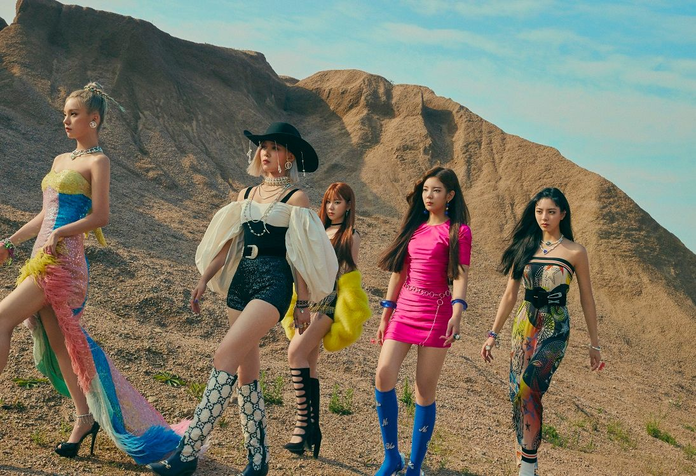

ITZY Introduction

왼쪽부터 예지, 류진, 채령, 리아, 유나이다.
그룹명 의미
ITZY(있지)는 2019년 2월 12일에 데뷔한 JYP 엔터테인먼트 소속의 5인조 걸 그룹이다.
팀명 ‘ITZY’는 “너희가 원하는거 전부 있지? 있지!”라고 자신감을 표방하는 이름이자,
특정 대상을 지칭할 때 쓰는 ‘It’, 가지고 싶은 대상을 향해 쓰는 ‘It’ 등 영어 ‘It’이 갖는 의미와,
걸 그룹에게 기대하는 모든 매력을 지니고 ‘있다’는 한국어의 뜻이 담긴 이름이다.
활동
2019년 2월 12일, 이 그룹은 첫 데뷔 싱글 음반 IT'z Different 를 발매하였으며 타이틀 곡은〈달라달라〉이다. 이 노래는 EDM, 하우스, 힙합 바이브가 혼합된 곡이며, 가사는 대중에게 잘 받아들여질 만한 내용이었다.뮤직 비디오는 공개된 지 24시간 만에 조회수가 14,000,000건을 넘어섰다.
2월 21일 엠카운트다운에서 데뷔 후 첫 1위를 하였으며, 같은 곡으로 음악방송 9관왕을 달성하였다.
7월 29일 자정 첫 번째 미니앨범 IT'z ICY의 타이틀곡인《ICY》의 뮤직비디오를 공개하며 컴백하였고, 음악방송 12관왕을 달성하였다.
2020년 3월 9일, 두 번째 미니앨범 IT'z ME의 타이틀곡《WANNABE》로 컴백하였고, 이 또한 타이틀곡《WANNABE》로 8관왕을 달성하였다.
2020년 8월 17일, 세 번째 미니앨범 Not Shy의 타이틀곡 《Not Shy》로 컴백하였다.
있지 수상경력
2019 올해의 브랜드 대상 〈올해의 신인여자아이돌〉
2019 MGMA 〈여자 신인 아티스트상〉
2019 제3회 소리바다 베스트 케이뮤직 어워즈 〈루키상〉
2019 브이라이브 어워즈 〈루키상〉
제4회 동아닷컴‘s PICK 〈무럭무럭 클상〉
제4회 아시아 아티스트 어워즈 〈신인상〉
제11회 멜론뮤직어워드 여자 부문 〈신인상〉
제21회 Mnet 엠넷 아시안 뮤직 어워즈 여자 〈신인상〉
2020년 1월 4일 제34회 골든디스크 여자 신인상
2020년 1월 4일 제34회 골든디스크 디지털음원 부문 본상
2020 제29회 하이원 서울가요대상〈신인상〉
2020 제9회 가온차트 뮤직 어워즈 음원 부문〈올해의 신인상〉